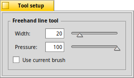

The Freehand Line tool - F
|  |
This tool lets you draw freely. controls how firmly the brush touches the canvas; the lighter the touch the more transparent the color. Paint with the left mouse button to use the foreground color, the right for the background color. The quick key to choose the freehand line tool is F. |
Next: The Straight Line tool